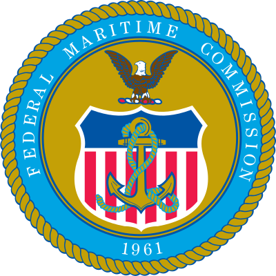

To move our customers' cargo from any Indian port to its final address in the United States under one contract, with the export cleared, the duty settled and the delivery made on the date promised.
Company
Yentrans Maritime Logistics started in Kochi in 2009, booking ocean freight for exporters in Kerala. The work grew the way it usually does in this trade: an exporter asked for inland haulage, then for clearance, then for someone to sort out the far end. Registrations followed that let the company sign for a whole movement rather than a port-to-port rate, and carry cargo on its own bill of lading. Reefer work came with the region and stayed a large part of the business.
Branches opened in Dubai and in Oman, close to the transhipment and consolidation traffic moving through the Gulf. The United States is now the route the company builds around: American customs, American trucking, American receiving hours. Yentrans loads from every major Indian port and delivers to addresses across the US, and the same office in Kochi stays responsible from the first booking to the last mile.

To move our customers' cargo from any Indian port to its final address in the United States under one contract, with the export cleared, the duty settled and the delivery made on the date promised.
For an Indian exporter shipping to America, the decision should be simple: hand the cargo to Yentrans and stop thinking about it until it is signed for at the other end.
Registrations
Yentrans is registered in India as an NVOCC, which is why the bill of lading on your shipment carries our name and not only a carrier's. It is also a registered Multimodal Transport Operator, the standing required to contract a door-to-door movement as a single carriage. Membership of the Millennium Logistics Network gives us vetted agents at destination, including at the US ports we use most.

Registered NVOCC · Multimodal Transport OperatorTell us the load, the origin, the delivery address in the United States and when it has to arrive. We will come back with a rate and a sailing, not a brochure.